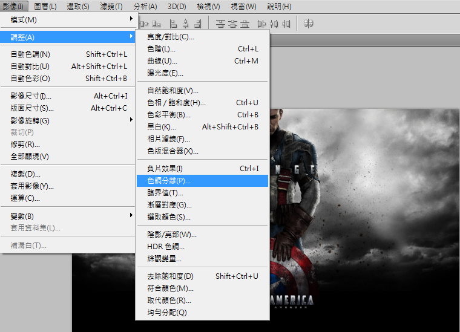
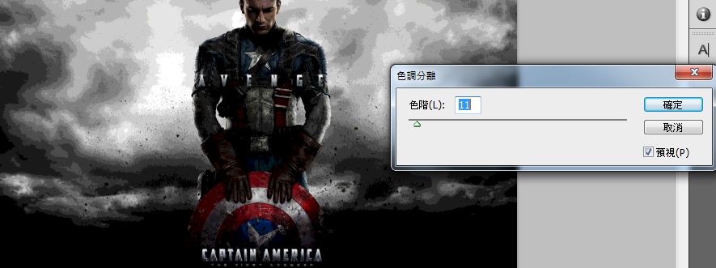
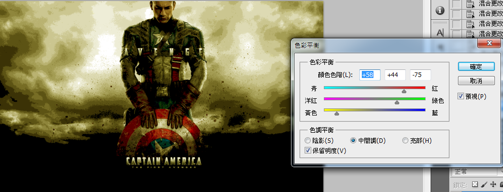
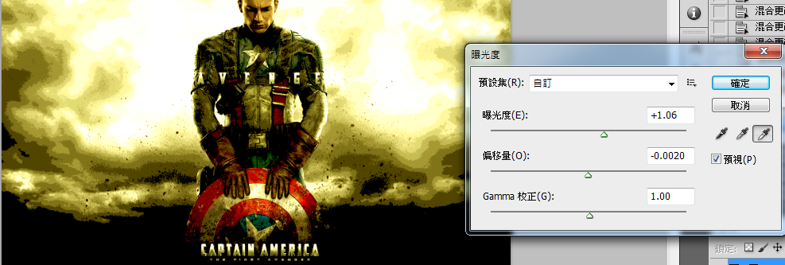
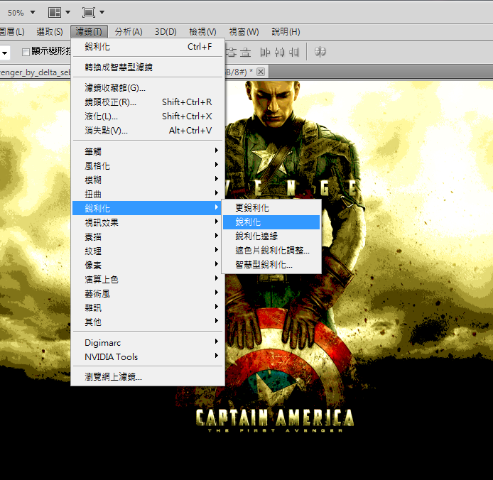
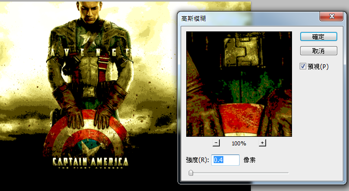
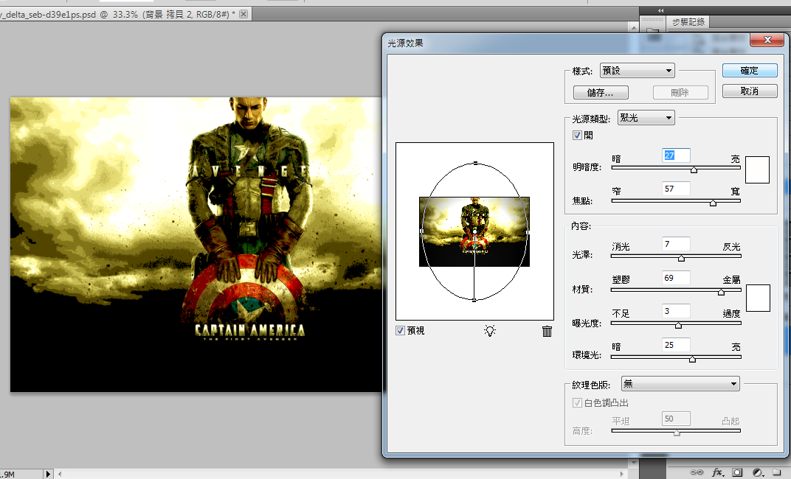
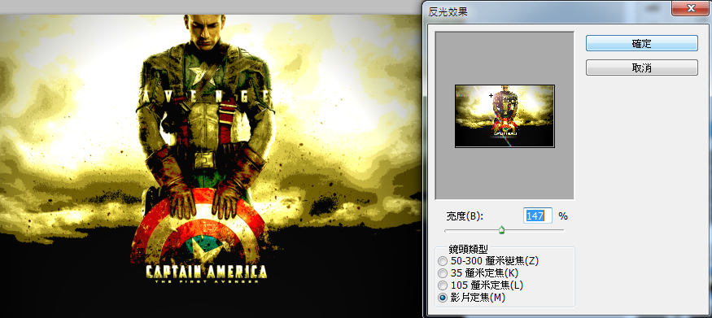

Process Picture
Description
3.進入色彩平衡(ctrl+b)
調整參數如左圖，使圖片看起來偏黃
4.調整 "曝光度" ，參數見左圖
使背景的光源更為強烈
5. 濾鏡 ---> 銳利化 ---> 銳利化 (兩次)
7. 濾鏡 ---> 演算上色 ---> 光源效果
調整參數見左圖，使光源集中在中央

9.反光效果中，亮度參數調到 "147%"
鏡頭類型調到 "影片定焦"

Process Picture
|
Description |
|
| 1 |  | 1.首先選取 "調整" 下之 "色調分離" |
| 2 |  | 2.然後進入色調分離後，調整參數為 "11" |
| 3 |  | 3.進入色彩平衡(ctrl+b) 調整參數如左圖，使圖片看起來偏黃 |
| 4 |  | 4.調整 "曝光度" ，參數見左圖 使背景的光源更為強烈 |
| 5 |  | 5. 濾鏡 ---> 銳利化 ---> 銳利化 (兩次) |
| 6 |  | 6.對圖片進行 "高斯模糊" |
| 7 |  | 7. 濾鏡 ---> 演算上色 ---> 光源效果 調整參數見左圖，使光源集中在中央 |
| 8 | |
8. 濾鏡 ---> 演算上色 ---> 反光效果 |
| 9 |  | 9.反光效果中，亮度參數調到 "147%" 鏡頭類型調到 "影片定焦" |
| 10 | |
10. 最終效果 |